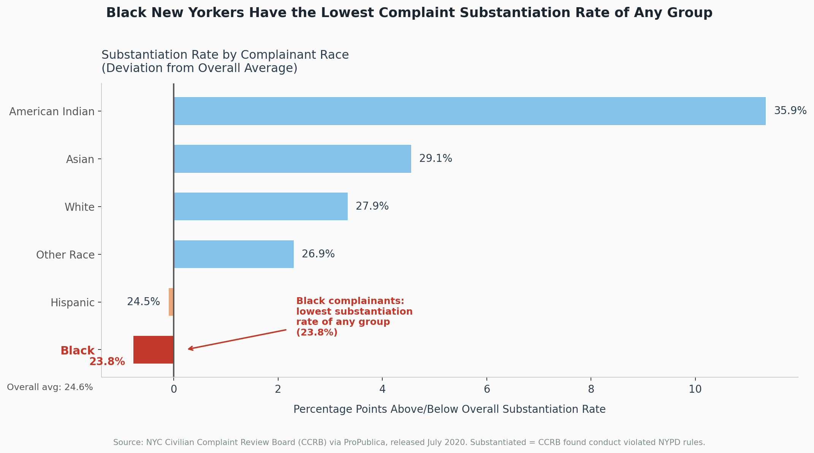
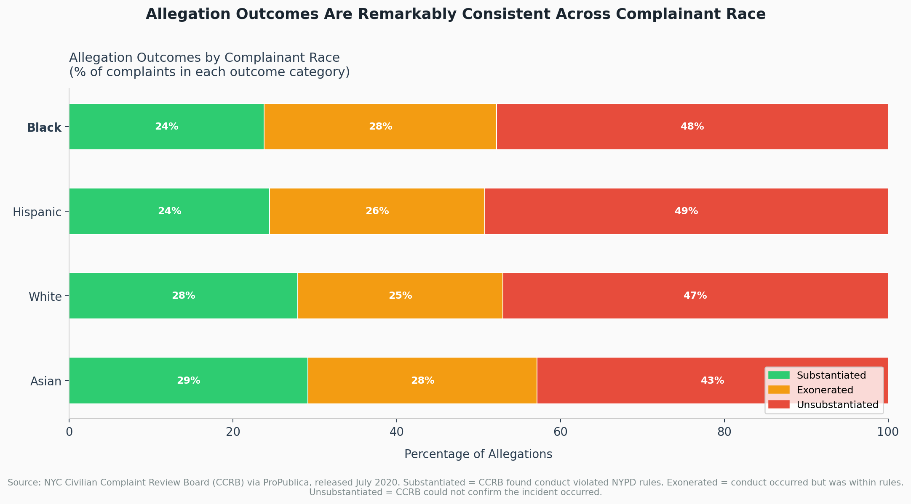

Proposition: [Black New Yorkers' complaints to the NYPD are substantiated at a lower rate than those of any other racial group.]
FOR the Proposition

Design Decisions and Rationale:
- Red is used exclusively for the Black bar and its label to create an immediate focal point so the reader's eye goes straight to the finding without needing to scan the legend.
- The annotation arrow reinforces the key takeaway in plain language, so the chart can stand alone without a caption.
- A diverging layout centered on the overall average is more honest and informative than a simple bar chart from zero, because the story is about relative disparity, not absolute rates.
AGAINST the Proposition

Design Decisions and Rationale:
- Three simplified outcome categories (Substantiated, Exonerated, Unsubstantiated) replace the original granular disposition labels, reducing cognitive load and making cross-group comparison immediate.
- A 100% stacked bar forces proportional comparison rather than volume comparison, which is the right frame when group sample sizes differ significantly.
- Green/orange/red encoding maps intuitively to good/neutral/bad outcomes, letting readers interpret the chart before reading the legend.
Final Reflection
We didn't just jump into this project with a predetermined narrative. Instead, we started by diving deep into the Civilian Complaints Against New York City Police Officers dataset, treating it almost like exploratory writing. Our process involved using Python and pandas to understand how complaint outcomes were distributed across different racial groups, which meant calculating substantiation rates by grouping data by race and disposition. What we found was revealing: there were disparities in how complaints were being resolved. Once we saw these patterns, we knew we had the foundation for our proposition. For the visualizations themselves, we used Tableau because it gave us the flexibility to experiment. We tested diverging bars, stacked bars, and different encodings to see what would actually work to highlight either relative differences or absolute proportions, depending on which story we were trying to tell. In the "for" visualization, we used hue (red for Black complainants) and spatial position to encode how far outcomes deviated from the citywide average, visual channels that naturally draw your eye and make you weight those differences more heavily. In the "against" visualization, we went with a 100% stacked bar chart and an intuitive color scheme (green for positive outcomes, red for negative), but we deliberately chose proportional encoding over absolute counts, which obscures volume differences between groups. These encoding decisions weren't random, they shaped exactly how quickly readers would understand our argument and what comparisons they'd naturally make.
When we were developing our investigative questions, we realized early on that we had a responsibility to frame them in a way that wouldn't lead our audience to predetermined conclusions. That meant asking ourselves some hard questions upfront: What are we actually trying to investigate? What does the data actually show us, versus what do we want it to show? The ideation process was iterative and honestly pretty collaborative. We brainstormed propositions centered around police accountability, and we landed on the substantiation rate disparity because that's what the data seemed to point toward, not because we wanted it to. For the "for" visualization, we focused on emphasizing the disparity in how Black complainants' cases were substantiated, using strategic color and annotation to direct attention without distorting the underlying numbers. For the "against" visualization, we shifted the frame entirely, asking instead whether outcome distributions were actually similar across racial groups when you looked at proportions rather than raw counts. This required us to constantly ask whether we were making choices in service of the data or in service of a predetermined narrative. We tested multiple designs, tweaked labels, adjusted scales, and ultimately made sure that whatever we ended up with was defensible and grounded in the actual data, not in what we wanted to believe.
Reflecting on the ethical dimensions of all this, we grappled with something that's really at the heart of visualization work: the line between persuasion and deception. The truth is, techniques like selective color emphasis or reframing scales can influence how people perceive information, and that power is real. But we came to understand that the distinguishing factor isn't whether you're using persuasive design, it's whether you're using it in service of truth or in service of distortion. In our view, ethical visualization means being transparent about your data transformations and your intentions. It means using design choices to highlight truths that might otherwise be obscured, not to hide truths that contradict your narrative. The bounds, as we see them, lie in intent and disclosure. Acceptable persuasion educates and informs by directing attention thoughtfully. Misleading design, on the other hand, manipulates by either hiding important context or presenting incomplete information as complete. This project taught us that all visualizations are rhetorical, whether we intend them to be or not. Every choice we make influences what someone sees when they look at our work. That's why ethical data science requires constant self-reflection on how our choices shape the narratives people take away from our work, and whether those narratives serve understanding or obscure it.